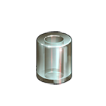

Получено: файл; исходный URL. Изображение подписано на странице-источнике; файл получен с зеркала. Совпадение с оригиналом не проверено. Страница: источник.
Стеклянная труба
Мой Мир; публикация 15.07.2011; редакция неизвестна- Тип
- Материалы
- Покупка
- нет данных
- Продажа
- нет данных
- Как получить
- [изображение: АЭС, зомби ферма, как построить АЭС] Изготовить в АЭС (ВКонтакте, ZOMBIA; требует сверки).
- Применение
- нет данных
- Особенности
- нет данных
- Версия и дата
- Мой Мир; публикация 15.07.2011; редакция неизвестна
Данные по источнику · Мой Мир · публикация 15.07.2011; редакция неизвестна
Предварительно: историческая статья, требует сверки. Требуется сверка.
Данные по источнику · ВКонтакте, ZOMBIA · 08 Августа 2011, 19:18; дата редакции не установлена
Предварительно: Данные одной исторической фанатской страницы; цифры и подписи изображений требуют сверки. Описание и условия сохранены по колонкам без додумывания.. Требуется сверка.
- Описание материала
- [изображение: зомби ферма, зомби мания, Стеклянная труба] Стоимость: 1500 монет
- Участвует в строительстве
- [изображение: Остров Веры, остров, зомби ферма, как построить Остров веры] [изображение: Вавилон, зомби ферма, как построить Вавилон] [изображение: Омега]
- Как достать
- [изображение: АЭС, зомби ферма, как построить АЭС] Изготовить в АЭС
- Участвует в создании
- нет текстовых данных; возможны неподписанные изображения


Данные по источнику · браузерная Зомби Ферма / Зомби Мания; платформа требует проверки · дата URL не гарантирует дату редакции
Предварительно: Индивидуальная страница прочитана автоматически, подписи значков могут содержать ошибки; даты редакции и независимость от ЗомбиСити не установлены.. Требуется сверка.
- Основной блок страницы и подписи изображений
- Материал [иллюстрация: Стеклянная труба] Стеклянная труба Цена покупки: 1 [иллюстрация: Зомбаксы] Цена продажи: 1500 [иллюстрация: Монеты] Продать или купить Стеклянные трубы можно в Обменке игры Зомби Ферма Стеклянная труба появилась в Зомби Ферме вместе с постройкой АЭС, еще в 2011 году. Для создания труб нужно много стекла, которое можно получить бесплатным подарком от друзей. Стеклянную трубу можно создать в постройке: Стеклянная труба [иллюстрация: Стеклянная труба] = 5 Стекло [иллюстрация: Стекло] + 1 Огонь [иллюстрация: Огонь] [иллюстрация: Стрелка] АЭС [иллюстрация: АЭС] Стеклянная труба участвует в создании Супер-батареи: Супер-батарея [иллюстрация: Супер-батарея] = 15 Стеклянная труба [иллюстрация: Стеклянная труба] + 3 Бозон Хиггса [иллюстрация: Бозон Хиггса] [иллюстрация: Стрелка] Деталь механизма [иллюстрация: Деталь механизма] Стеклянная труба участвует в строительстве: Дельтаплан [иллюстрация: Дельтаплан] Вавилон [иллюстрация: Вавилон] Врата [иллюстрация: Врата] На Омегу [иллюстрация: На Омегу] Джокер [иллюстрация: Джокер] Серьёзный коттедж [иллюстрация: Серьёзный коттедж] Страшный остров [иллюстрация: Страшный остров] Чучело Джэка [иллюстрация: Чучело Джэка] Перевал №4 [иллюстрация: Перевал №4] Ледовая арена [иллюстрация: Ледовая арена] Звездный волк [иллюстрация: Звездный волк] Звездный волк 250 [иллюстрация: Звездный волк 250]
Связанные сущности
нет проверенных связей — требуется сверка.